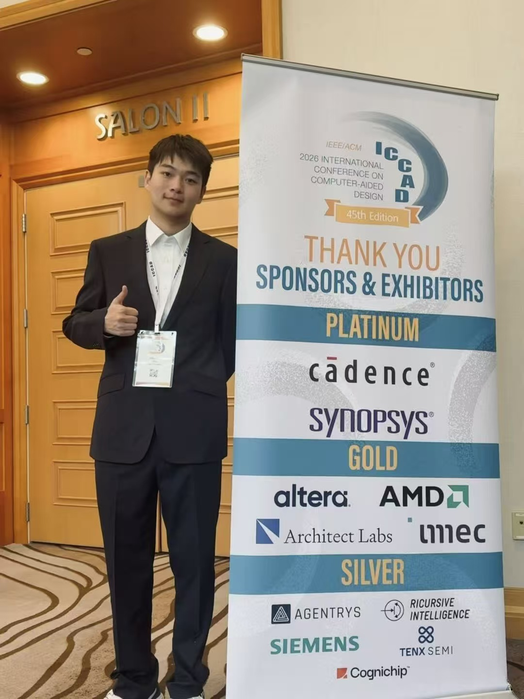

2.5D Chiplet Systems
System-level physical design for chiplet integration in advanced packaging.
CHIPLET SYSTEMSFUDAN UNIVERSITY / CODA LAB
Doctoral Student · Fudan University
Exploring power delivery and physical design for 2.5D chiplet systems.

A LITTLE ABOUT ME
I am a doctoral student at Fudan University. I joined CODA lab in Fall 2025. Previously, I received my bachelor’s degree from Nanjing University of Posts and Telecommunications.
My research focuses on power-delivery-network optimization and physical design for 2.5D chiplet systems. My work includes joint optimization of PDN geometry and TSV layout, as well as analytical placement for large-scale chiplet systems.
More at CODA labRESEARCH INTERESTS
Connecting circuits and systems through optimization.
System-level physical design for chiplet integration in advanced packaging.
CHIPLET SYSTEMSCo-optimizing PDN geometry and TSV layouts, with a focus on dynamic voltage drop and power delivery.
POWER DELIVERYAnalytical placement methods for ultra-large-scale, multi-reticle chiplet systems.
PHYSICAL DESIGNSELECTED PUBLICATIONS
IEEE/ACM International Conference on Computer-Aided Design, 2026
IEEE Transactions on Computer-Aided Design of Integrated Circuits and Systems, 2026
† Corresponding authors.
EDUCATION
2025 — Present
Doctoral student
CODA lab
Undergraduate studies
Bachelor’s degree
HONORS & AWARDS
Empyrean’s PyAether Ecosystem Program
CNE-PDNView award announcementLET’S CONNECT
Happy to connect on chiplet systems, power delivery, and physical design.